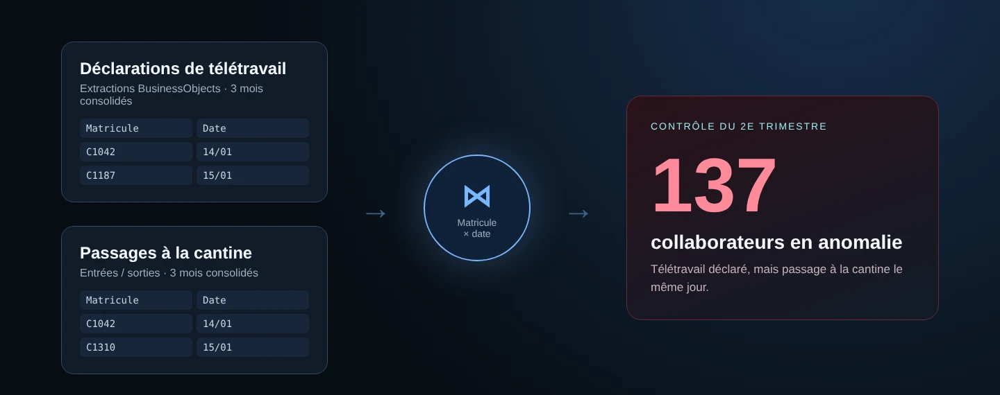

Contrôle télétravail / restauration
Contrôle trimestriel croisant deux sources de données RH pour détecter les incohérences entre les jours déclarés en télétravail et les passages au restaurant d’entreprise : 137 collaborateurs en anomalie identifiés sur un trimestre, suivis de reprises sur salaire.

Le contexte
Chez AXA Group Operations, les collaborateurs déclarent leurs jours de télétravail dans un outil interne. Cette déclaration a une conséquence directe : un jour télétravaillé ouvre droit à un titre-restaurant, puisque le collaborateur ne peut pas déjeuner au restaurant d’entreprise.
Un contrôle trimestriel a été mis en place pour vérifier la cohérence de ces déclarations. La question posée était simple : des collaborateurs déclarés en télétravail un jour donné sont-ils malgré tout venus déjeuner sur site ce même jour ? Dans ce cas, ils bénéficiaient d’un titre-restaurant tout en utilisant le restaurant d’entreprise, ce qui constitue une anomalie à traiter.
La difficulté
Les deux informations nécessaires existaient, mais dans deux systèmes différents, gérés par deux équipes distinctes :
- les déclarations de télétravail, dans les données RH, accessibles par extraction ;
- les passages au restaurant d’entreprise, dans le fichier du service en charge de la restauration.
Ces données étaient en plus produites mois par mois. Pour couvrir le deuxième trimestre, il fallait donc travailler sur six fichiers (trois mois de télétravail, trois mois de passages à la cantine), les consolider, puis les rapprocher ligne à ligne de manière fiable.
Ma démarche
1. Extraire
Extraction depuis SAP BusinessObjects des déclarations de télétravail de chacun des trois mois du trimestre : un collaborateur et une date par ligne.
2. Collecter
Demande au service en charge de la restauration des fichiers mensuels des entrées et sorties de la cantine, pour les mêmes trois mois.
3. Consolider
Regroupement des trois mois dans un fichier consolidé unique : toutes les déclarations de télétravail du trimestre d’un côté, toutes les entrées et sorties de la cantine de l’autre.
4. Préparer
Harmonisation des deux sources : même identifiant collaborateur, même format de date, suppression des doublons et contrôle des valeurs manquantes.
5. Rapprocher
Croisement des deux fichiers dans Excel avec des formules (SI, NB.SI…) : pour chaque jour de télétravail, recherche d’un passage à la cantine le même jour.
6. Restituer
Consolidation du résultat par collaborateur et transmission d’une liste claire, servant de base aux régularisations.
La logique du rapprochement
Le principe repose sur une clé commune : l’identifiant du collaborateur associé à une date. Pour chaque ligne du fichier de télétravail, la formule compte le nombre de passages à la cantine correspondant exactement à ce collaborateur et à ce jour :
Passages_même_jour = NB.SI.ENS(Cantine!Matricule; [Matricule]; Cantine!Date; [Date_télétravail])
Anomalie = SI([Passages_même_jour] > 0; "Oui"; "Non")Si ce nombre est supérieur à zéro, le jour est signalé en anomalie. Le résultat est ensuite agrégé par collaborateur : nombre de jours de télétravail, nombre de jours en anomalie, statut final.
Le résultat
Le contrôle a permis d’identifier 137 collaborateurs en anomalie : déclarés en télétravail, ils avaient pourtant un passage enregistré au restaurant d’entreprise le même jour. Ces situations ont ensuite donné lieu à des reprises sur salaire, correspondant aux titres-restaurant attribués pour des jours où le collaborateur était en réalité présent sur site.
Une précision importante : une anomalie est une incohérence entre deux sources de données. Elle signale une situation à vérifier, mais ne constitue pas à elle seule une preuve de fraude. Une déclaration modifiée tardivement ou une erreur de saisie peuvent aussi l’expliquer. C’est pourquoi la liste issue du rapprochement servait de base de vérification, avant toute régularisation par les équipes RH et paie.
Démonstration reproductible
Les fichiers d’origine appartiennent à AXA Group Operations et ne peuvent pas être diffusés. J’ai donc reconstitué le contrôle à l’identique, avec des données entièrement fictives : un trimestre (avril, mai, juin), six fichiers mensuels, 240 collaborateurs fictifs, 6 602 jours de télétravail déclarés et 5 456 passages à la cantine. Le contrôle y fait ressortir 38 collaborateurs et 88 jours en anomalie.
La même analyse est proposée en trois versions, qui donnent exactement le même résultat :
Excel
La méthode d’origine : fichiers consolidés, formules NB.SI.ENS et SI, anomalies en rouge, synthèse par mois et par collaborateur.
Python (pandas)
Consolidation automatique des fichiers mensuels, jointure sur le matricule et la date, puis agrégation par collaborateur.
SQL
Une jointure entre les deux tables consolidées, avec une requête de détail et une requête de synthèse.
Ce que ce projet mobilise
- Compréhension d’un enjeu métier : traduire une question de contrôle RH en règle de données précise et vérifiable.
- Collecte multi-sources : extraction depuis un outil décisionnel et coordination avec une autre équipe pour obtenir ses données.
- Consolidation : réunir plusieurs fichiers mensuels en une base trimestrielle cohérente.
- Qualité des données : identifiants, formats de date, doublons, valeurs manquantes.
- Rapprochement et contrôle de cohérence : la logique d’une jointure, appliquée ici dans Excel, et reproductible en SQL ou en Python.
- Impact concret : un résultat directement exploitable par les équipes RH et paie, ayant conduit à des régularisations sur salaire.
- Rigueur dans la restitution : distinguer une anomalie détectée d’une conclusion vérifiée.